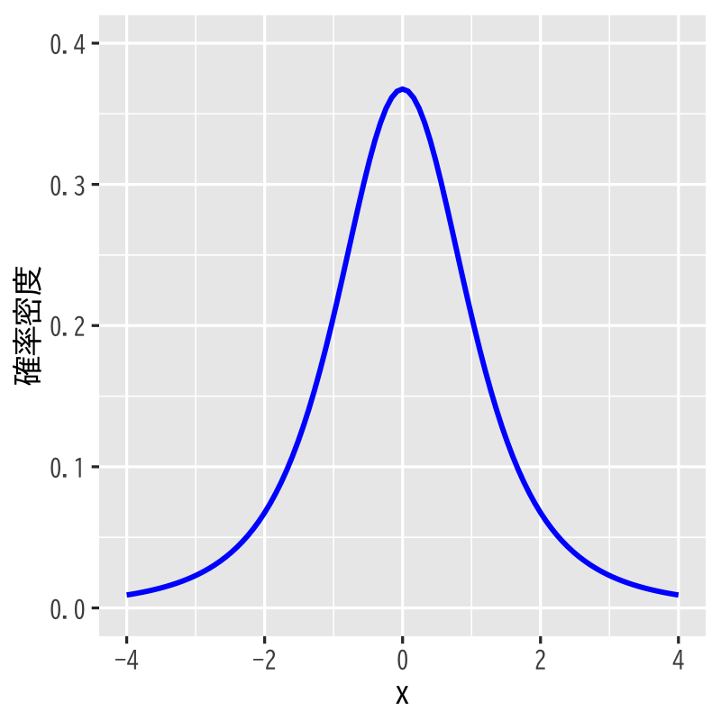

数学的準備
多変量解析 - 第2講
(Press ? for help, n and p for next and previous slide)
講義の内容
- 確率
- 確率分布
- 確率質量関数・確率密度関数
- 正規分布 (\(\chi^2\)-分布，\(t\)-分布，\(F\)-分布 )
- 統計
- 統計量 (標本平均，不偏分散・共分散，相関係数)
- 最尤法 (尤度関数)
- Bayes の定理
- 関数の微分
- ベクトルによる微分
- 行列による微分
確率
確率分布
定義
注目する事象(見本空間の部分集合)に対して， それが起きる確率(区間 \([0,1]\) の実数)を返す関数
\begin{equation} P(\text{事象})=\text{確率値} \end{equation}を 確率分布 という．
- 実用上重要な分布
- 離散分布
- 連続分布 (絶対連続な分布)
確率質量関数
離散分布の場合
1つの見本点 \(x\) からなる事象を \(A=\{x\}\) とする． 事象 \(A\) (根元事象という)の起きる確率
\begin{equation} P(A=\{x\})= p(x) \end{equation}を表す関数 \(p\) を 確率質量関数 という．
確率密度関数
連続分布の場合
事象 \(A\) が起きる確率は 確率密度関数 \(p\) の積分
\begin{equation} P(A)=\int_A p(x)dx \end{equation}で表される．
事象 \(A\) が十分小さな集合の場合
\(A\) に含まれる適当な点を \(x\) とし， \(A\) の大きさ(考える空間により体積や面積に相当)を \(|A|\) と書くことにすれば， 事象 \(A\) の起きる確率を
\begin{equation} P(A)=p(x)\cdot|A| \end{equation}で近似することができる．
正規分布 (normal/Gaussian distribution)

Figure 1: 正規分布 (平均\(0\),分散\(1\))
- 見本空間: \((-\infty,\infty)\)
- 母数: 平均 \(\mu\), 分散 \(\sigma^{2}\)
密度関数:
\begin{equation} f(x) = \frac{1}{\sqrt{2\pi}\sigma}e^{-\frac{(x-\mu)^{2}}{2\sigma^{2}}} \end{equation}- 備考: \(\mu=0,\sigma=1\) のとき 標準正規分布 と呼ぶ．
多次元正規分布
- 見本空間: \(\mathbb{R}^{p}\)
- 母数: 平均 \(\boldsymbol{\mu}\), 分散共分散行列 \(\Sigma\)
密度関数:
\begin{equation} f(\boldsymbol{x}) =\frac{1}{\sqrt{(2\pi)^p|\Sigma|}} e^{-\frac{1}{2}(\boldsymbol{x}-\boldsymbol{\mu})^{\mathsf{T}} \Sigma^{-1}(\boldsymbol{x}-\boldsymbol{\mu})} \end{equation}
正規分布の特徴付け
- 性質
- さまざまな誤差の集積は正規分布となる(中心極限定理)
- 同じ分散(ばらつき)を持つ分布の中で最も情報量(エントロピー)が大きい
- 用途
- 誤差の分布に関する知識がないときには正規分布だと考えておくと安全である
- 多変量解析の多くの手法は誤差の分布に関して正規性を仮定して導出する
\(\chi^{2}\)-分布 (\(\chi^{2}\)-distribution)

Figure 2: \(\chi^{2}\)-分布 (自由度\(3\))
- 見本空間: \([0,\infty)\)
- 母数: 自由度 \(\nu\)
密度関数:
\begin{align} f(x) &= \frac{1}{2^{\nu/2}\Gamma(\frac{\nu}{2})}x^{\nu/2-1}e^{-x/2}\\ &\qquad\Gamma(z)=\int_0^\infty e^{-t}t^{z-1}dt \end{align}- 備考: 標準正規分布に従う独立な確率変数の2乗和の分布
\(\chi^{2}\)-分布の特徴付け
- 性質
標準正規分布に従う独立な確率変数の2乗和の分布
\begin{align} Z&=\sum_{i=1}^{\nu}X_{i}^{2} \sim \chi^{2}(\nu) \quad\text{(自由度\(\nu\)の\(\chi^{2}\)-分布)}\\ &X_{i}\sim \mathcal{N}(0,1)\;(i=1,\dotsc,\nu) \quad\text{(標準正規分布)} \end{align}- 正規分布に従う確率変数の不偏分散は \(\chi^{2}\)-分布に従う確率変数の定数倍となる
- 用途
- 分散の大きさに関する検定に用いられる
- 独立性検定・適合度検定など様々な検定でも用いられる
\(t\)-分布 (Student’s \(t\)-distribution)

Figure 3: \(t\)-分布 (自由度\(3\))
- 見本空間: \((-\infty,\infty)\)
- 母数: 自由度 \(\nu\)
密度関数:
\begin{equation} f(x)= \frac{\Gamma\left(\frac{\nu+1}{2}\right)} {\sqrt{\nu\pi}\Gamma\left(\frac{\nu}{2}\right)} \left(1+\frac{x^{2}}{\nu}\right)^{-\frac{1}{2}(\nu+1)} \end{equation}- 備考: 標準正規分布と \(\chi^{2}\)-分布に従う独立な 確率変数の比の分布
\(t\)-分布の特徴付け
- 性質
標準正規分布と \(\chi^{2}\)-分布に従う独立な確率変数の比の分布
\begin{align} Z&=\frac{X}{\sqrt{Y/\nu}} \sim \mathcal{T}(\nu) \quad\text{(自由度\(\nu\)の\(t\)-分布)}\\ &X\sim \mathcal{N}(0,1), \quad Y\sim \chi^{2}(\nu) \end{align}- 正規分布に従う確率変数の標本平均と真の値の差は 不偏分散で正規化すると\(t\)-分布に従う確率変数となる
- 用途
- 平均値を推定する問題の検定に利用される
- 信頼区間の構成に利用される
\(F\)-分布 (\(F\)-distribution)

Figure 4: \(F\)-分布 (自由度\(3,5\))
- 見本空間: \([0,\infty)\)
- 母数: 自由度 \(\nu_{1},\nu_{2}\)
密度関数:
\begin{equation} f(x) = \frac{(\nu_{1}/\nu_{2})^{\nu_{1}/2}}{B(\nu_{1}/2,\nu_{2}/2)} \frac{x^{\nu_{1}/2-1}}{(1+\nu_{1}x/\nu_{2})^{(\nu_{1}+\nu_{2})/2}} \end{equation}- 備考: \(\chi^{2}\)-分布に従う独立な確率変数の比の分布
\(F\)-分布の特徴付け
- 性質
\(\chi^{2}\)-分布に従う独立な確率変数の比の分布
\begin{align} Z&=\frac{Y_{1}/\nu_{1}}{Y_{2}/\nu_{2}} \sim \mathcal{F}(\nu_{1},\nu_{2}) \quad\text{(自由度\(\nu_{1},\nu_{2}\)の\(F\)-分布)}\\ &Y_{i}\sim \chi^{2}(\nu_{i})\;(i=1,2) \end{align}- 正規分布に従う確率変数の2つの独立な標本の不偏分散の比は \(F\)-分布に従う確率変数となる
- 用途
- 分散を推定する問題の検定に利用される
- 分散の信頼区間の構成に利用される
演習
問題
標準正規分布の密度関数
\begin{equation} f(x) = \frac{1}{\sqrt{2\pi}}e^{-\frac{x^{2}}{2}} \end{equation}を\(\mathbb{R}\)上で積分すると 1となることを確かめよ
- 標準正規分布に従う確率変数を\(X\)とする． \(X\)が 0付近の値をとる確率と 1付近の値をとる確率の比を求めよ
統計
記述統計量
- 記述統計量 : (または要約統計量・基本統計量)
- データを簡潔に要約して表すための統計値
- その集団全体の特徴を表す重要な指標
- 一般に確率分布は未知
手に入る少数のサンプル(観測データ)から 推定
\begin{equation} X_1,X_2,\dots,X_n \end{equation}- 真の値と観測データによる推定には差が存在
平均
- データの代表値を表す記述統計量
平均 (mean):
\begin{equation} \mu=\mathbb{E}[X] = \begin{cases} \sum_{x\in\Omega} x p(x), &\text{(離散分布の場合)}\\ \int_{x\in\Omega} x p(x)dx, &\text{(連続分布の場合)} \end{cases} \end{equation}標本平均 (sample mean):
\begin{equation} \bar{X} =\frac{1}{n}\sum_{i=1}^{n}X_{i} =\frac{X_{1}+\dotsb+X_{n}}{n} % =\frac{X_1+X_2+\cdots+X_n}{n} \end{equation}
分散
- データのばらつき具合を表す記述統計量
分散 (variance):
\begin{equation} \mathrm{Var}(X)=\sigma^{2}=\mathbb{E}[(X-\mu)^{2}] \end{equation}標本分散 (sample variance):
\begin{equation} S^{2} =\frac{1}{n}\sum_{i=1}^n(X_{i}-\bar{X})^{2} =\frac{(X_{1}-\bar{X})^{2}+\dotsb+(X_{n}-\bar{X})^{2}}{n} % =\frac{(X_1-\bar{X})^2+(X_2-\bar{X})^2+\cdots+(X_n-\bar{X})^2}{n} \end{equation}
標本平均・分散の不偏性
標本平均は \(\mu\) の 不偏推定量である:
\begin{equation} \mathbb{E}[\bar{X}]=\mu \end{equation}標本分散は \(\sigma^2\) の 不偏推定量ではない:
\begin{equation} \mathbb{E}[S^2]=\frac{n-1}{n}\sigma^2 \end{equation}- 標本分散は平均的には真の分散を 過小推定 する
不偏分散
- 不偏性を担保した分散の推定量
バイアス補正: 標本分散に \(n/(n-1)\) を乗じたもの
\begin{equation} s^2=\frac{n}{n-1}S^2=\frac{1}{n-1}\sum_{i=1}^n(X_i-\bar{X})^2 \end{equation}は \(\sigma^2\) の不偏推定量となる
標準偏差
標準偏差 (standard deviation):
\begin{equation} \sigma=\sqrt{\mathrm{Var}(X)}=(\mathbb{E}[(X-\mu)^{2}])^{1/2} \end{equation}- 分散の平方根
標本標準偏差 (sample standard deviation):
\begin{equation} \hat\sigma=s \end{equation}- 通常, 不偏分散の平方根 \(s\) を用いる
- 一般に \(s\) は標準偏差 \(\sigma\) の 不偏推定量ではない
標準化
- 複数データの分析のために単位や基準を揃える方法
データ \(X_{1},X_{2},\dotsc,X_{n}\) の標準化:
\begin{equation} Z_{i}=\frac{X_i-\bar{X}}{s}\quad(i=1,2,\dotsc,n) \end{equation}- \(s\) の代わりに \(S\) で割って定義する文献もある
- 定義から \(Z_{1},Z_{2},\dotsc,Z_{n}\) の 標本平均は0, 不偏分散は1 に規格化される
- \(Z_{i}\): 標準得点 あるいは Zスコア
偏差値
- 別の基準での標準化
- 教育学や心理学では, 平均50, 標準偏差10が好まれる
標本平均50, 標準偏差10に線形変換:
\begin{equation} T_{i}=10Z_{i}+50\quad(i=1,\dotsc,n) \end{equation}- \(T_{i}\): 偏差値得点 あるいは Tスコア
共分散
- 複数のデータ間の関係を知るための記述統計量
共分散 (covariance):
\begin{equation} \mathrm{Cov}(X,Y)=\mathbb{E}[(X-\mathbb{E}[X])(Y-\mathbb{E}[Y])] \end{equation}標本共分散 (sample covariance):
\begin{equation} \mathrm{Cov}(X,Y)=\frac{\sum_{i=1}^n(X_i-\bar{X})(Y_i-\bar{Y})}{n-1} \end{equation}
相関
- 2種類のデータ間の比例関係の大きさ
相関 (correlation):
\begin{equation} \rho=\frac{\mathrm{Cov}(X,Y)}{\sqrt{\mathrm{Var}(X)\mathrm{Var}(Y)}} \end{equation}標本相関 (sample correlation):
\begin{equation} \rho=\frac{\sum_{i=1}^n(X_i-\bar{X})(Y_i-\bar{Y})} {\sqrt{\sum_{i=1}^n(X_i-\bar{X})^2}\sqrt{\sum_{i=1}^n(Y_i-\bar{Y})^2}} \end{equation}
離散分布の尤度関数
- \(X_1=x_1,X_2=x_2,\dots,X_n=x_n\) の同時確率
- 確率質量関数: \(f_{\boldsymbol{\theta}}(x)\)
- 確率質量関数のパラメタ: \(\boldsymbol{\theta}=\theta_1,\dots,\theta_p)\)
独立な確率変数の同時確率:
\begin{align} & P(X_1=x_1,X_2=x_2,\dots,X_n=x_n) =\prod_{i=1}^nP(X_i=x_i)\\ &= \prod_{i=1}^nf_{\boldsymbol{\theta}}(x_i) =f_{\boldsymbol{\theta}}(x_1)\cdot f_{\boldsymbol{\theta}}(x_2)\cdots f_{\boldsymbol{\theta}}(x_n) \end{align}
定義
パラメタ \(\boldsymbol{\theta}\) に対して 観測データ \(X_1,X_2,\dots,X_n\) が得られる理論上の確率
\begin{equation} L(\boldsymbol{\theta}) =\prod_{i=1}^nf_{\boldsymbol{\theta}}(X_i) \end{equation}を \(\boldsymbol{\theta}\) の 尤度 と言い， \(\boldsymbol{\theta}\) の関数 \(L\) を 尤度関数 と呼ぶ．
- 観測データ \(X_1,X_2,\dots,X_n\) が現れるのにパラメタ \(\boldsymbol{\theta}\) の値がどの程度尤もらしいかを測る尺度となる
連続分布の尤度関数
- \(x_1\leq X_1\leq x_1+\delta,\dotsc,x_n\leq X_n\leq x_n+\delta\) の同時確率
- 確率密度関数: \(f_{\boldsymbol{\theta}}(x)\)
- 確率密度関数のパラメタ: \(\boldsymbol{\theta}=(\theta_1,\dots,\theta_p)\)
独立な確率変数の同時確率:
\begin{align} & P(x_1\leq X_1\leq x_1+\delta,\dotsc,x_n\leq X_n\leq x_n+\delta) =\prod_{i=1}^nP(x_i\leq X_i\leq x_i+\delta)\\ &\simeq \prod_{i=1}^nf_{\boldsymbol{\theta}}(x_i)\delta =f_{\boldsymbol{\theta}}(x_1)\cdot f_{\boldsymbol{\theta}}(x_2)\cdots f_{\boldsymbol{\theta}}(x_n)\delta^{n} \end{align}
定義
パラメタ \(\boldsymbol{\theta}\) に対して 観測データ \(X_1,X_2,\dots,X_n\) が得られる理論上の確率密度
\begin{equation} L(\boldsymbol{\theta}) =\prod_{i=1}^nf_{\boldsymbol{\theta}}(X_i) \end{equation}を \(\boldsymbol{\theta}\) の 尤度 と言い， \(\boldsymbol{\theta}\) の関数 \(L\) を 尤度関数 と呼ぶ．
最尤法
最尤法:
観測データに対して「最も尤もらしい」パラメタ値を \(\boldsymbol{\theta}\) の推定量として採用する方法 を最尤法という．
最尤推定量:
\(\Theta\) を尤度関数の定義域として， 尤度関数を最大とする \(\hat{\boldsymbol{\theta}}\)
\begin{equation} L(\hat{\boldsymbol{\theta}}) =\max_{\boldsymbol{\theta}\in\Theta}L(\boldsymbol{\theta}). \end{equation}を \(\boldsymbol{\theta}\) の 最尤推定量 という．
Bayesの定理 (基本形)
定理
条件付確率では次の等式が成り立つ．
\begin{equation} P(A|B) =\frac{P(A)P(B|A)}{P(B)}. \end{equation}- 左辺と右辺で事象 \(A,B\) の役割が異なる
Bayes の定理 (一般形)
定理
\(\Omega=A_1+A_2+\dotsb+A_n\) のとき
\begin{equation} P(A_i|B) =\frac{P(A_i)P(B|A_i)}{\sum_{k=1}^nP(A_k)P(B|A_k)} \end{equation}が成り立つ．
演習
問題
以下の問に答えなさい
A先生は大の野球ファンで， 球団Hの勝敗で翌日の機嫌が左右されるとしよう． よくよく調べた結果
- 球団Hが勝つと90%の確率で機嫌が良い
- 球団Hが負けると70%の確率で機嫌が悪い
が成り立っているとする．
また球団Hの勝率は現在のところ
- 球団Hは60%の確率で勝つ
- 球団Hは40%の確率で負ける
となっているとする．
- A先生が機嫌が良いときに球団Hが勝った確率は？
- A先生が機嫌が悪いときに球団Hが負けた確率は？
関数の微分
ベクトルによる微分
\(d\) 次元ベクトル:
\begin{equation} \boldsymbol{a} =\begin{pmatrix} a_1\\ a_2\\ \vdots\\ a_d \end{pmatrix} =(a_1,a_2,\dotsc,a_d)^{\mathsf{T}} \end{equation}ベクトル \(\boldsymbol{a}\) による関数 \(f(\boldsymbol{a})\) の微分:
\begin{equation} \frac{\partial f}{\partial\boldsymbol{a}} = \left( \frac{\partial f}{\partial a_1}, \frac{\partial f}{\partial a_2}, \dotsc, \frac{\partial f}{\partial a_d} \right)^{\mathsf{T}} \end{equation}
ベクトルによる微分 (例題)
問題
\(d\) 次元ベクトル \(\boldsymbol{a}\) と \(\boldsymbol{b}\) を用いて定義される関数 \(f(\boldsymbol{a})=\boldsymbol{b}^{\mathsf{T}}\boldsymbol{a}=\boldsymbol{a}^{\mathsf{T}}\boldsymbol{b}\) の \(\boldsymbol{a}\) による微分を求めよ．
解答例
各成分で考えると以下のように計算される．
\begin{equation} \frac{\partial f}{\partial a_i} =\frac{\partial}{\partial a_i} \left(a_1b_1+\dotsb+a_ib_i+\dotsb+a_db_d\right) =b_i. \end{equation}したがって
\begin{equation} \frac{\partial f}{\partial\boldsymbol{a}} = \left( b_{1}, b_{2}, \dotsc, b_{d} \right)^{\mathsf{T}} =\boldsymbol{b} \end{equation}となる．
注意
\begin{equation} \begin{aligned} \frac{\partial}{\partial\boldsymbol{a}}\left(\boldsymbol{a}^{\mathsf{T}}\boldsymbol{b}\right) &=\boldsymbol{b}\\ \frac{\partial}{\partial\boldsymbol{a}}\left(\boldsymbol{b}^{\mathsf{T}}\boldsymbol{a}\right) &=(\boldsymbol{b}^{\mathsf{T}})^{\mathsf{T}}=\boldsymbol{b} \end{aligned} \end{equation}というルールがあることがわかる．
行列による微分
\(d\times d\) 行列:
\begin{equation} A = \begin{pmatrix} a_{11}&a_{12}&\dotsm&a_{1d}\\ a_{21}&a_{22}&\dotsm&a_{2d}\\ \vdots&&\ddots&\vdots\\ a_{d1}&a_{d2}&\dotsm&a_{dd} \end{pmatrix} \end{equation}
行列 \(A\) による関数 \(f(A)\) の微分:
\begin{equation} \frac{\partial f}{\partial A} = \begin{pmatrix} \frac{\partial f}{\partial a_{11}} &\frac{\partial f}{\partial a_{12}}&\dotsm &\frac{\partial f}{\partial a_{1d}}\\[3pt] \frac{\partial f}{\partial a_{21}} &\frac{\partial f}{\partial a_{22}}&\dotsm &\frac{\partial f}{\partial a_{2d}}\\[3pt] \vdots&&\ddots&\vdots\\ \frac{\partial f}{\partial a_{d1}} &\frac{\partial f}{\partial a_{d2}}&\dotsm &\frac{\partial f}{\partial a_{dd}} \end{pmatrix} \end{equation}
行列による微分 (例題1)
問題
行列 \(A\) と \(d\) 次元ベクトル \(\boldsymbol{b}\) を用いて定義される関数
\begin{equation} f(A)=\boldsymbol{b}^{\mathsf{T}}A\boldsymbol{b}=\sum_{i,j=1}^{d}b_ia_{ij}b_j \end{equation}の行列 \(A\) による微分を求めよ．
解答例
成分で考えると
\begin{equation} \frac{\partial f}{\partial a_{ij}} = \frac{\partial}{\partial a_{ij}}\sum_{i,j=1}^{d}b_ia_{ij}b_j =b_ib_j \end{equation}となるので，
\begin{equation} % \frac{\partial f}{\partial A} \frac{\partial}{\partial A}\boldsymbol{b}^{\mathsf{T}}A\boldsymbol{b} = \begin{pmatrix} b_1b_1&b_1b_2&\dots&b_1b_d\\ b_2b_1&b_2b_2&\dots&b_2b_d\\ \vdots&&\ddots&\vdots\\ b_db_1&b_db_2&\dots&b_db_d \end{pmatrix} =\boldsymbol{b}\boldsymbol{b}^{\mathsf{T}}. \end{equation}
行列による微分 (例題2)
問題
\(d\times d\) 行列 \(A\) と \(B\) を用いて定義される関数
\begin{equation} f(A)=\mathrm{tr} AB=\sum_{i,j=1}^{d}a_{ij}b_{ji} \end{equation}の行列 \(A\) による微分を求めよ．
解答例
成分では
\begin{equation} \frac{\partial f}{\partial a_{ij}} =b_{ji} \end{equation}となるので，
\begin{equation} % \frac{\partial f}{\partial A} \frac{\partial}{\partial A}\mathrm{tr} AB = \begin{pmatrix} b_{11}&b_{21}&\dots&b_{d1}\\ b_{12}&b_{22}&\dots&b_{d2}\\ \vdots&&\ddots&\vdots\\ b_{1d}&b_{2d}&\dots&b_{dd} \end{pmatrix} =B^{\mathsf{T}}. \end{equation}と書くことができる．
注意1
上の行列のトレースの性質から
\begin{align} &\frac{\partial}{\partial A}\mathrm{tr} AB=B^{\mathsf{T}}\\ &\frac{\partial}{\partial A}\mathrm{tr} BA=B^{\mathsf{T}}\\ &\frac{\partial}{\partial A}\mathrm{tr} A^{\mathsf{T}}B^{\mathsf{T}}=B^{\mathsf{T}}\\ &\frac{\partial}{\partial A}\mathrm{tr} B^{\mathsf{T}}A^{\mathsf{T}}=B^{\mathsf{T}} \end{align}ことが容易に確かめられる．
注意2
\begin{equation} \boldsymbol{b}^{\mathsf{T}}A\boldsymbol{b} =\mathrm{tr}\boldsymbol{b}^{\mathsf{T}}A\boldsymbol{b}=\mathrm{tr} A\boldsymbol{b}\boldsymbol{b}^{\mathsf{T}} \end{equation}となることから
\begin{equation} \frac{\partial}{\partial A}\boldsymbol{b}^{\mathsf{T}}A\boldsymbol{b} = \frac{\partial}{\partial A}\mathrm{tr} A\boldsymbol{b}\boldsymbol{b}^{\mathsf{T}} =\left(\boldsymbol{b}\boldsymbol{b}^{\mathsf{T}}\right)^{\mathsf{T}} =\boldsymbol{b}\boldsymbol{b}^{\mathsf{T}} \end{equation}となり，2つの例での計算結果が矛盾しないことが確かめられる．
演習
問題
行列(正方行列に限らない)のトレースに関して
\begin{equation} \mathrm{tr} AB =\mathrm{tr} B^{\mathsf{T}}A^{\mathsf{T}} =\mathrm{tr} BA =\mathrm{tr} A^{\mathsf{T}}B^{\mathsf{T}} \end{equation}が成り立つことを示せ
- \(d\) 次元ベクトル \(\boldsymbol{a}\) と \(d\times d\) 行列 \(A\) で定義される関数 \(f(\boldsymbol{a})=\boldsymbol{a}^{\mathsf{T}}A\boldsymbol{a}\) のベクトル \(\boldsymbol{a}\) による微分を求めよ
- 行列 \(A\) の行列式を \(|A|\) と書くとき
行列 \(A\) による行列式 \(|A|\) の微分を求めよ
- ヒント: 余因子展開を利用すると容易に求められる
次週の予定
- 第1日: 回帰モデルの考え方と推定
- 第2日: モデルの評価
- 第3日: モデルによる予測と発展的なモデル